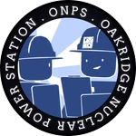

How to get the badges
Speedrunner

"Explode the reactor within 8 minutes"
- Disable Auto Scram
- Do this by disabling Recirc Pumps and isolation valves and withdrawing rods as fast as possible.
- Explode the reactor within 8 minutes.
?????

"What?"
- Climb on top of the first cooling tower, the left one relative to the train tracks.
- Turn left and walk around the cooling tower until you see a floppa cube.
- Touch the floppa.
#1 Enemy of staff morale

"Throw all the pizza into the spent fuel pool."
- Grab all the pizza from the staff cafeteria. You can do so by repeatably touching the pizza circle.
- Head to the Reactor Hall.
- When entering, there will be a water pool to your right.
- Drop the pizzas in your inventory into the pool by pressing backspace.
Deep Fried

"Make contact with live wires in the bridge circuit room."
- Go to either one of the generator bridge circuit rooms located on the left and right side of the Turbine Sub Level.
- Go behind the breakers, away from the barrier, then head to the middle of the breakers.
- Jump up and down until you get electricuted. Try to hit the wires.
Sufficiently ionized

"Reach a fatal dosage of ionizing radiation."
- Go to a radiation source. Best places are the spent fuel pools and reactor hall.
- Stay there until your dosimeter reads 500 rem.
Power to the people

"Connect to the grid and deliver power."
- Successfully sync a turbine and start producing positive power.
BOOP!

":3c"
- Go to the turbine hall entrance located next to the control room.
- Take the south stairwell and climb to the top.
- Turn left and go through the door.
- Walk forward until you see a blue furry plushy. Click on it.
Floor pizza

"Kinda gross, ngl"
- While at the elevators in the entrance of the facility, head to level 2.
- Take the door on the far left.
- Look to your left until you see a pizza with a wet sign.
- Touch the loose pizza slice and eat it.
You're fired!

"Fail to produce any power within 48 hours"
- Don't make any power for 2 days.
7 Nights at Oakridge

"Complete a whole week at the plant."
- Successfully produce power and maintain the reactor for 7 days without meltdowns.
Senior Operator

"You've proven yourself in the art of reactor operation."
- Gain 500,000 total points as an operator.
By the book

"Reach 100% efficiency while meeting demand."
- You can reach 100% efficiency by lowering the amount of bypass being used by the turbine while meeting demand.
- Lower reactor power in 50 MW increments until the bypass on the turbine is fully closed. (This requires using Auto Bypass)
Teamwork? Sounds like a liability

"Complete an entire shift all on your own."
- Complete a shift by yourself without exploding/melting the reactor.
GET ME FEEDWATER!

"Don't always take things at face value."
- To trigger this easter egg, toggle the red/grey switches located on the end of the operator panel.
- When the reactor water level line graph shows a straight line, click on it multiple times.
Junior operator

"Hope you were paying attention."
- Reach 75,000 total points as a operator.
Energy tycoon

"Sell over 20 gigawatt-hours of power in one day"
- Sell a total of 20000 MW of power in a single day.
- You can see the amount of power sold by looking straight up above the condensate pump panel.
Supervisor

"Share your wisdom and guide your peers to success!"
- Earn a total of 1,250,000 points as an operator
OSHA would be proud

"Safely shut down the reactor without mishap."
- Reach the end of a shift and receive the call to shutdown the reactor.
- Follow the shutdown checklist.
- Ensure that the following systems are enabled/disabled before requesting inspection:
- Turbine Gear is engaged for both turbines.
- Breaker 18M-G1 is off.
- Offline Core Cooling and OCC pumps are enabled.
- You should receive this badge if you meet all the criteria for a good shutdown.
Shift Manager

"Middle management, maximum ego."
- Reach a total of 2,500,000 points as an operator.